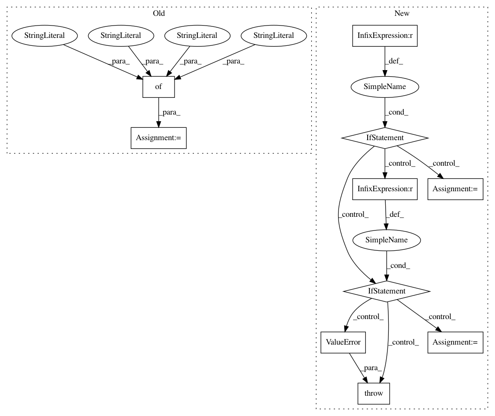

0375cb0a69852f21f19c8568b4a37128d4407fc0,theanolm/layers/networkinput.py,NetworkInput,__init__,#NetworkInput#Any#Any#,17
Before Change
:param network: the network object creating this layer
layer_options = { "name": "__input__",
"input_layers": [],
"size": output_size }
super().__init__(layer_options, network)
def create_structure(self):
Creates the symbolic matrix that describes the network input.
After Change
self.input_type = input_options["type"]
if self.input_type == "word":
output_size = network.vocabulary.num_words()
elif self.input_type == "class":
output_size = network.vocabulary.num_classes()
else:
raise ValueError(
"Invalid network input type: {}".format(self.input_type))
input_options["size"] = output_size
input_options["input_layers"] = []
super().__init__(input_options, network)
In pattern: SUPERPATTERN
Frequency: 3
Non-data size: 10
Instances
Project Name: senarvi/theanolm
Commit Name: 0375cb0a69852f21f19c8568b4a37128d4407fc0
Time: 2016-04-12
Author: seppo.git@marjaniemi.com
File Name: theanolm/layers/networkinput.py
Class Name: NetworkInput
Method Name: __init__
Project Name: facebookresearch/poincare-embeddings
Commit Name: 5f465041619a63bf1de99c55d1298865bf70fd9e
Time: 2020-01-07
Author: mattle@fb.com
File Name: embed.py
Class Name:
Method Name: async_eval
Project Name: IBM/adversarial-robustness-toolbox
Commit Name: a02b5c28b1ebe56bf5513d16aa6ef59d08ee28a5
Time: 2019-03-12
Author: Maria-Irina.Nicolae@ibm.com
File Name: art/attacks/universal_perturbation.py
Class Name: UniversalPerturbation
Method Name: __init__